Lec1 Transformation 变换
将一个空间的点转换为另一个空间的点
2D Transformation
Linear Transformation
缩放（Scale）：
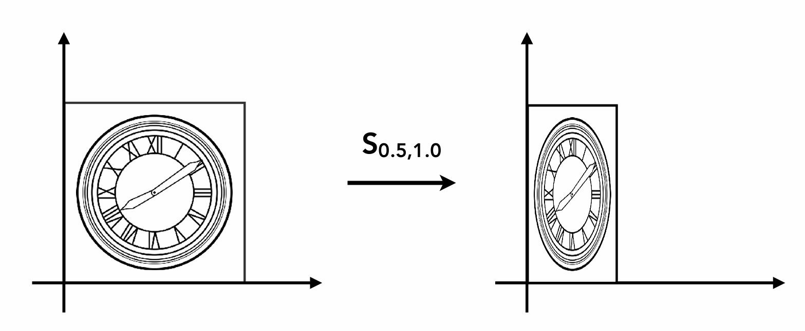
$$\begin{pmatrix} x'\\ y' \end{pmatrix}=\begin{pmatrix} s_x & 0\\ 0 & s_y \end{pmatrix}\begin{pmatrix} x\\ y \end{pmatrix}$$
翻转（Reflection）：
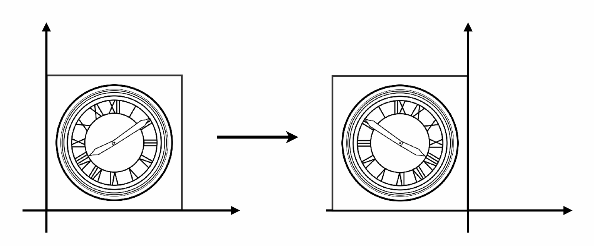
$$\begin{pmatrix} x'\\ y' \end{pmatrix}=\begin{pmatrix} -1 & 0\\ 0 & 1 \end{pmatrix}\begin{pmatrix} x\\ y \end{pmatrix}$$
切变（Shear）：
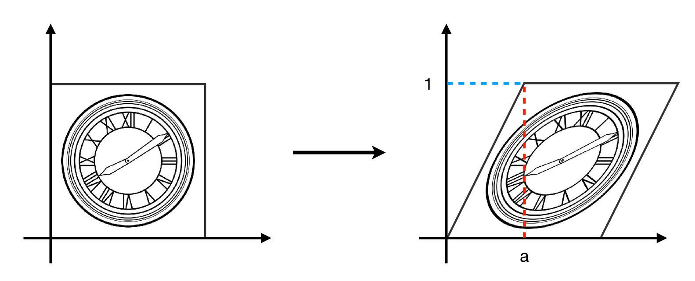
$$\begin{pmatrix} x'\\ y' \end{pmatrix}=\begin{pmatrix} 1 & a\\ 0 & 1 \end{pmatrix}\begin{pmatrix} x\\ y \end{pmatrix}$$
旋转（Rotation）：
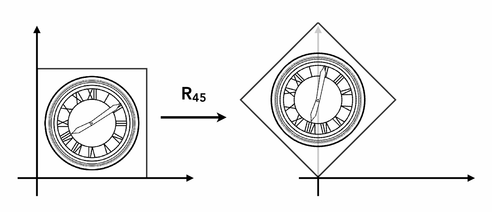
$$\begin{pmatrix} x'\\ y' \end{pmatrix}=\begin{pmatrix} \cos\theta & -\sin\theta\\ \sin\theta & \cos\theta \end{pmatrix}\begin{pmatrix} x\\ y \end{pmatrix}$$
以上变换称为线性变换（Linear Transformation），可以概括成如下的形式：
$$\begin{pmatrix} x'\\ y' \end{pmatrix}=\begin{pmatrix} a & b\\ c & d \end{pmatrix}\begin{pmatrix} x\\ y \end{pmatrix}$$
Affine Transformation
仿射变换可以看作是线性变换加上平移变换。其数学表达式为：
$$\begin{pmatrix} x'\\ y' \end{pmatrix}=\begin{pmatrix} a &b\\ c&d \end{pmatrix}\begin{pmatrix} x\\ y \end{pmatrix}+\begin{pmatrix} t_x\\ t_y \end{pmatrix}$$
平移（Translation）：
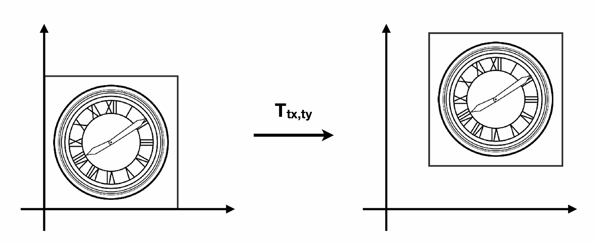
$$\begin{pmatrix} x'\\ y' \end{pmatrix}=\begin{pmatrix} 1 & 0\\ 0 & 1 \end{pmatrix}\begin{pmatrix} x\\ y \end{pmatrix}+\begin{pmatrix} t_x\\ t_y \end{pmatrix}$$
齐次坐标（Homogeneous Coordinates）：
我们仍然希望将平移变换等仿射变换写成线性变换的形式，即只使用矩阵乘法。这个时候就需要引入齐次坐标。
- 对于二维的点，加入第三个维度：$(x,y,1)^T$
- 对于二维的向量，加入第三个维度：$(x,y,0)^T$
这个时候，仿射变换就可以写成：
$$\begin{pmatrix} x'\\ y'\\ 1 \end{pmatrix}=\begin{pmatrix} a & b & t_x\\ c & d & t_y\\ 0 & 0 & 1 \end{pmatrix}\begin{pmatrix} x\\ y\\ 1 \end{pmatrix}$$
对于缩放变换：
$$S(s_x,s_y)=\begin{pmatrix} s_x & 0 & 0\\ 0 & s_y & 0\\ 0 & 0 & 1 \end{pmatrix}$$
Note
齐次坐标$(x,y,1)^T$实际表示二维坐标$(\frac{x}{z},\frac{y}{z})^T$。
对于旋转变换：
$$R(\theta)=\begin{pmatrix} \cos\theta & -\sin\theta & 0\\ \sin\theta & \cos\theta & 0\\ 0 & 0 & 1 \end{pmatrix}$$
对于平移变换：
$$T(t_x,t_y)=\begin{pmatrix} 1 & 0 & t_x\\ 0 & 1 & t_y\\ 0 & 0 & 1 \end{pmatrix}$$
3D Transformation
$$\begin{pmatrix} x'\\ y'\\ z'\\ 1 \end{pmatrix}=\begin{pmatrix} a & b & c & t_x\\ d & e & f & t_y\\ g & h & i & t_z\\ 0 & 0 & 0 & 1 \end{pmatrix}\begin{pmatrix} x\\ y\\ z\\ 1 \end{pmatrix}$$
先进行线性变换，再进行平移变换。
旋转（Rotation）：
绕$x$轴旋转：
$$R_x(\theta)=\begin{pmatrix} 1 & 0 & 0 & 0\\ 0 & \cos\theta & -\sin\theta & 0\\ 0 & \sin\theta & \cos\theta & 0\\ 0 & 0 & 0 & 1 \end{pmatrix}$$
绕$y$轴旋转：
$$R_y(\theta)=\begin{pmatrix} \cos\theta & 0 & \sin\theta & 0\\ 0 & 1 & 0 & 0\\ -\sin\theta & 0 & \cos\theta & 0\\ 0 & 0 & 0 & 1 \end{pmatrix}$$
绕$z$轴旋转：
$$R_z(\theta)=\begin{pmatrix} \cos\theta & -\sin\theta & 0 & 0\\ \sin\theta & \cos\theta & 0 & 0\\ 0 & 0 & 1 & 0\\ 0 & 0 & 0 & 1 \end{pmatrix}$$
任意一种形态的旋转都可以分解成绕$x,y,z$轴的旋转：
$$R_{xyz}(\alpha,\beta,\gamma)=R_x(\alpha)R_y(\beta)R_z(\gamma)$$
这三个角称为欧拉角（Euler angles），绕$x,y,z$轴的旋转分别称为Roll，Pitch，Yaw。
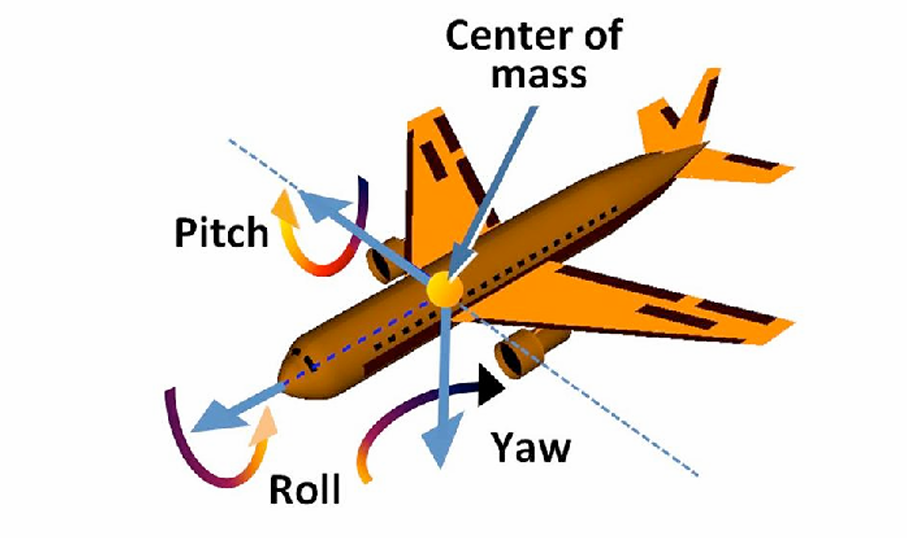
Rodrigues' Rotation Formula:
绕$n$轴（默认起点为原点的单位向量$n=(n_x,n_y,n_z)^T$）旋转$\alpha$角度：
$$R(n,\alpha)=\cos(\alpha)I+(1-\cos(\alpha))n n^T+\sin(\alpha)\begin{pmatrix} 0 & -n_z & n_y\\ n_z & 0 & -n_x\\ -n_y & n_x & 0 \end{pmatrix}$$
Camera Transformation
想象用相机拍一张照片：
- 第一步：找到一个好的位置并搭好场景，这就是model transformation，也就是将物体从局部坐标系变换到世界坐标系。
- 第二步：调整相机的位置和方向，这就是view transformation，也就是将物体从世界坐标系变换到相机坐标系。
- 第三步：拍照，这就是projection transformation，也就是将物体从相机坐标系变换到裁剪坐标系。
三步合称MVP变换。第一步的变换在前面已经介绍过了，下面介绍第二步和第三步。
View Transformation
形式化定义：
- 相机的位置：$\vec{e}$
- 相机的朝向：$\vec{g}$
- 相机的上方向：$\vec{t}$
已知：如果相机和物体一起移动，二者相对静止，那么拍到的照片不会变。
既然这样，我们将相机位置移到原点，看向$-z$轴方向，向上方向为$y$轴方向。物体也进行相应的变换，相机和物体的变换矩阵是一致的。
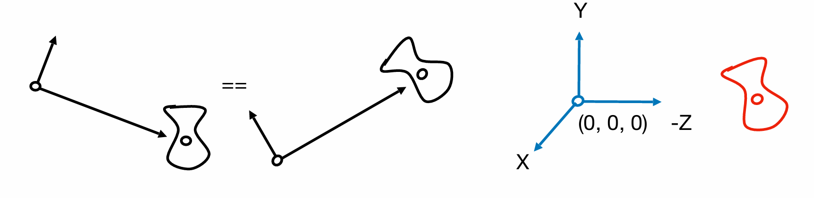
设变换矩阵为
$$M_{view}=R_{view}T_{view}$$
首先是平移，有
$$T_{view}=\begin{pmatrix} 1 & 0 & 0 & -x_e\\ 0 & 1 & 0 & -y_e\\ 0 & 0 & 1 & -z_e\\ 0 & 0 & 0 & 1 \end{pmatrix}$$
接着是旋转，我们考虑反向的过程，即把$x$轴旋转到$\vec{g}\times\vec{t}$，把$y$轴旋转到$\vec{t}$，把$z$轴旋转到$-\vec{g}$：
$$R_{view}^{-1}=\begin{pmatrix} x_{\vec{g}\times\vec{t}} & x_t & x_{-g} & 0\\ y_{\vec{g}\times\vec{t}} & y_t & y_{-g} & 0\\ z_{\vec{g}\times\vec{t}} & z_t & z_{-g} & 0\\ 0 & 0 & 0 & 1 \end{pmatrix}$$
我们有结论：旋转矩阵的逆等于它的转置。因此：
$$R_{view}=\begin{pmatrix} x_{\vec{g}\times\vec{t}} & y_{\vec{g}\times\vec{t}} & z_{\vec{g}\times\vec{t}} & 0\\ x_t & y_t & z_t & 0\\ x_{-g} & y_{-g} & z_{-g} & 0\\ 0 & 0 & 0 & 1 \end{pmatrix}$$
Projection Transformation
投影变换分为两种：正交投影（Orthographic Projection）和透视投影（Perspective Projection）。
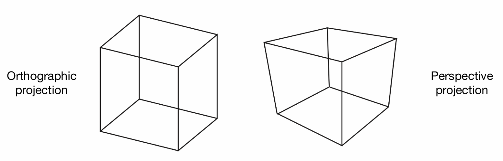
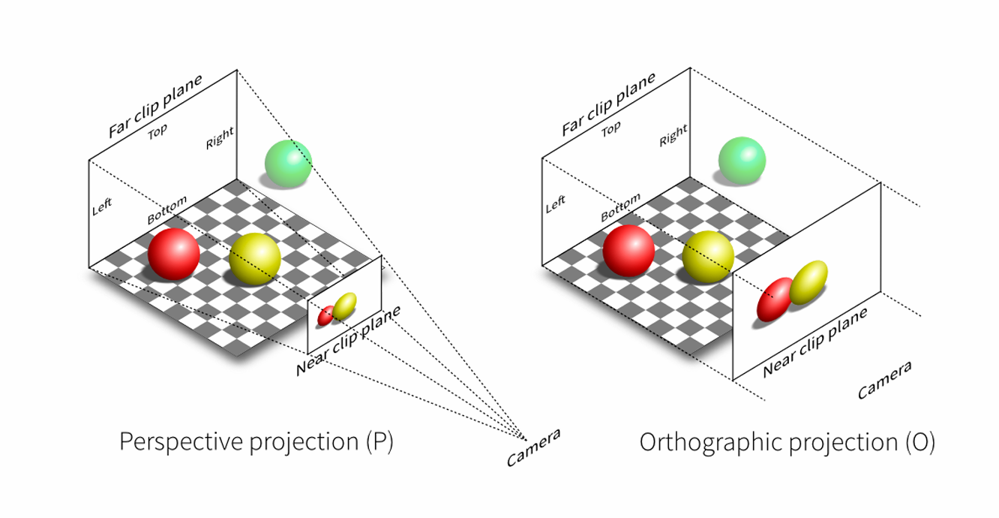
正交投影（Orthographic Projection）：
对于空间中的长方体$[l,r]\times[b,t]\times[f,n]$，我们要把它压到立方体$[-1,1]\times[-1,1]\times[-1,1]$中。
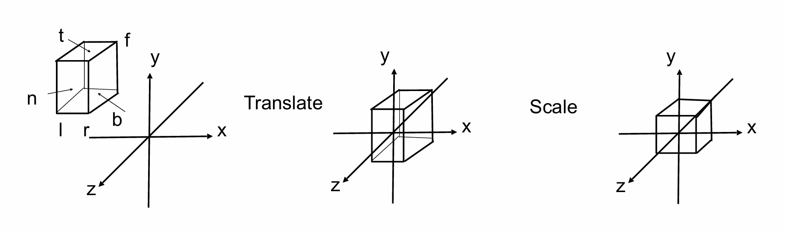
实际上就是一个先平移再缩放的过程：
$$M_{ortho}=\begin{pmatrix} \frac{2}{r-l} & 0 & 0 & 0\\ 0 & \frac{2}{t-b} & 0 & 0\\ 0 & 0 & \frac{2}{n-f} & 0\\ 0 & 0 & 0 & 1 \end{pmatrix}\begin{pmatrix} 1 & 0 & 0 & -\frac{r+l}{2}\\ 0 & 1 & 0 & -\frac{t+b}{2}\\ 0 & 0 & 1 & -\frac{n+f}{2}\\ 0 & 0 & 0 & 1 \end{pmatrix}$$
透视投影（Perspective Projection）：
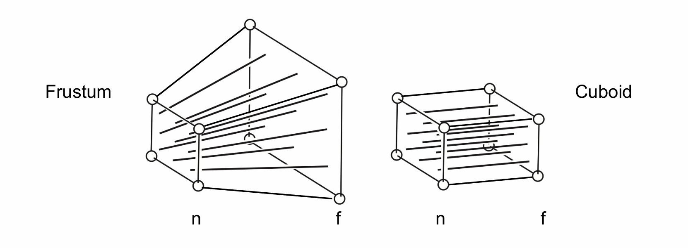
对于透视投影，我们的输入应该是如左图所示的一个视锥，由近平面和远平面组成。我们也希望能将其压到一个立方体中。
Note
视锥常常用以下定义描述范围：
- 视野（Field-of-View）：$\tan\frac{fovY}{2}=\frac{t}{|n|}$
- 宽高比（Aspect Ratio）：$aspect=\frac{r}{t}$
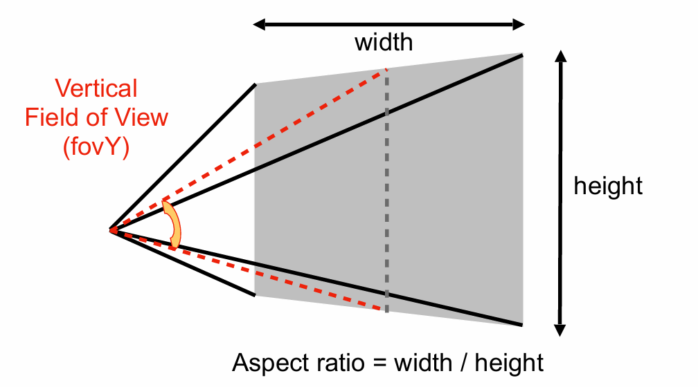
那么，我们可以分成两步。第一步是把棱台压到长方体中，第二步是进行正交投影。我们先来考虑较为复杂的第一步。
对于第一步的变换，我们的假设是：近平面上的点位置都不变，远平面上的点$z$值不变，$x$值和$y$值收缩。（注意，我们并没有规定近平面和远平面中间的点$z$值不变）
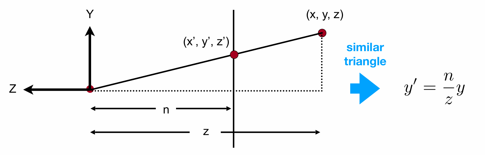
如上图所示，我们从侧面看过去。假设近平面上的点的$z$值是$n$，远平面上的点的$z$值是$f$。对于近平面和远平面之间的任意一点$(x,y,z)$，为了变换成立方体，其变换后的点$(x',y',z')$需要满足：
$$x'=\frac{n}{z}x$$
$$y'=\frac{n}{z}y$$
变换如下：
$$\begin{pmatrix} x\\ y\\ z\\ 1 \end{pmatrix}\to\begin{pmatrix} \frac{n}{z}x\\ \frac{n}{z}y\\ \text{unknown}\\ 1 \end{pmatrix}$$
这里变换后的$z'$值是未知的。我们想用一个矩阵的乘法来达到上述变换效果，但$\frac{1}{z}$无法表示。因此，我们可以在变换后的坐标上同乘$z$，这样并不会改变实际的含义：
$$\begin{pmatrix} x\\ y\\ z\\ 1 \end{pmatrix}\to\begin{pmatrix} \frac{n}{z}x\\ \frac{n}{z}y\ \text{unknown}\\ 1 \end{pmatrix}==\begin{pmatrix} nx\\ ny\\ \text{still unknown}\\ z \end{pmatrix}$$
也就是说，目前我们的目标是求出变换矩阵$M_{persp->ortho}$：
$$\begin{pmatrix} nx\\ ny\\ \text{still unknown}\\ z \end{pmatrix}=M_{persp->ortho}\begin{pmatrix} x\\ y\\ z\\ 1 \end{pmatrix}$$
依据上面的形式，我们目前可以给$M_{persp->ortho}$填上部分值：
$$M_{persp->ortho}=\begin{pmatrix} n & 0 & 0 & 0\\ 0 & n & 0 & 0\\ ? & ? & ? & ?\\ 0 & 0 & 1 & 0 \end{pmatrix}$$
如何确定第三行？我们有两个条件可以使用：1.任意一个$(x,y,n,1)$（近平面上的点），经过变换后位置不变。 2.任意一个$(x,y,f,1)$（远平面上的点），经过变换后$z$值不变。
根据第一点，用$n$替换$z$，则有：
$$\begin{pmatrix} nx\\ ny\\ n^2\\ n \end{pmatrix}=\begin{pmatrix} n & 0 & 0 & 0\\ 0 & n & 0 & 0\\ ? & ? & ? & ?\\ 0 & 0 & 1 & 0 \end{pmatrix} \begin{pmatrix} x\\ y\\ n\\ 1 \end{pmatrix}$$
我们得知$M_{persp->ortho}$的第三行和$x$，$y$都没有关系，因此可以写成$\begin{pmatrix} 0 & 0 & A & B \end{pmatrix}$的形式，且有：
$$An+B=n^2$$
根据第二点，用$f$替换$z$，则有：
$$\begin{pmatrix} fx\\ fy\\ f^2\\ f \end{pmatrix}=\begin{pmatrix} n & 0 & 0 & 0\\ 0 & n & 0 & 0\\ 0 & 0 & A & B\\ 0 & 0 & 1 & 0 \end{pmatrix} \begin{pmatrix} x\\ y\\ f\\ 1 \end{pmatrix}$$
有：
$$Af+B=f^2$$
两式联立解得：
$$A=n+f$$
$$B=-nf$$
综上：
$$M_{persp->ortho}=\begin{pmatrix} n & 0 & 0 & 0\\ 0 & n & 0 & 0\\ 0 & 0 & n+f & -nf\\ 0 & 0 & 1 & 0 \end{pmatrix}$$
然后第二步是正交投影，对应矩阵已经给出。